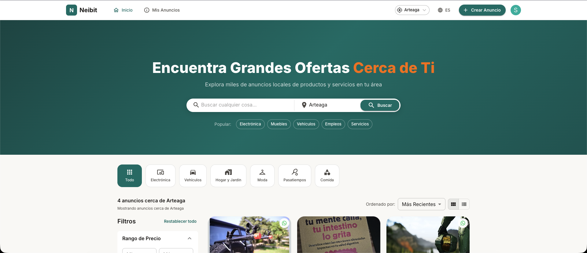
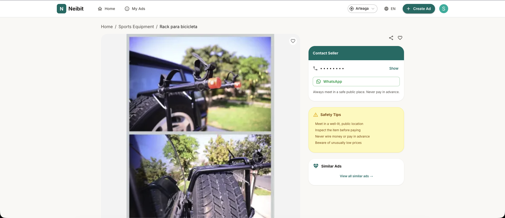
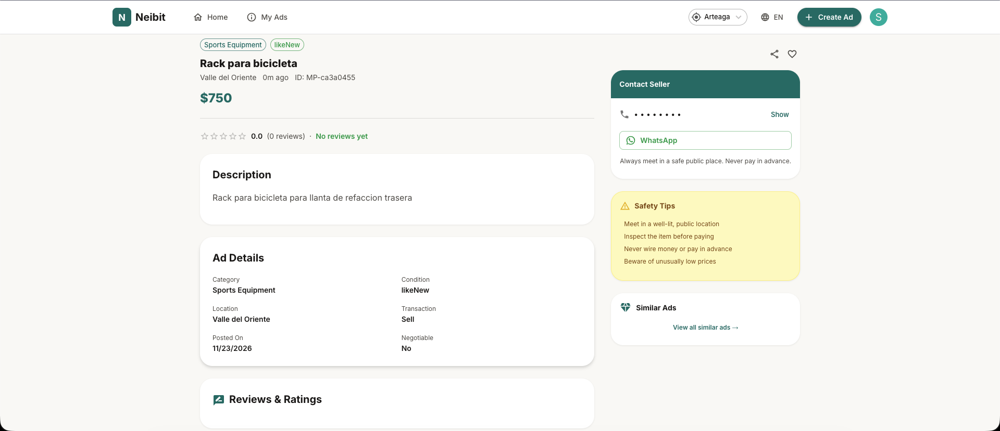

Hiperlocal por diseño
La búsqueda parte de tu ubicación: geolocalización del dispositivo, buscador de ciudades y un radio ajustable en kilómetros. Los resultados son de tu zona.
Resumen del producto · Microsoft for Startups
Neibit es un marketplace hiperlocal: publicas un anuncio en minutos y las personas de tu zona lo encuentran por categoría, precio, condición y distancia. La misma cuenta funciona en la web y en la app móvil.
Esta página reúne, para la revisión del programa, qué es Neibit, a quién sirve, cómo está construido y en qué estado se encuentra.
Qué es Neibit
Neibit conecta a quien quiere vender algo con quien lo busca a pocos kilómetros. El producto cubre el ciclo completo: crear una cuenta, publicar con fotos, encontrar por cercanía y gestionar los anuncios desde cualquier dispositivo.
La búsqueda parte de tu ubicación: geolocalización del dispositivo, buscador de ciudades y un radio ajustable en kilómetros. Los resultados son de tu zona.
Fotos, título, descripción, categoría, precio y condición. Crear, editar y eliminar anuncios desde la web o el móvil, con el mismo usuario.
La web y la app móvil consumen los mismos servicios a través de una capa BFF, así que las funciones y los datos son idénticos en ambos lados.
Problema y solución
El comprador tiene que filtrar la zona a mano, los anuncios se pierden entre miles de resultados de otras ciudades y publicar exige más pasos de los necesarios. En un mercado local, lo que decide la compra es la cercanía y la confianza en la otra persona, no el volumen del catálogo.
Neibit resuelve la búsqueda por radio desde tu posición, ofrece los filtros que de verdad se usan en persona (distancia, condición, fecha, precio) y reduce la publicación a un formulario breve con fotos. La web y el móvil comparten servicios, cuenta y datos.
Cómo funciona
Cualquier persona puede buscar anuncios sin cuenta. La cuenta solo es necesaria para publicar y gestionar.
La app detecta tu posición o buscas tu ciudad; el radio de búsqueda se ajusta en kilómetros.
Búsqueda por texto con sugerencias y filtros por categoría, precio, condición, fecha y distancia, con orden por más reciente o precio.
Fotos, categoría, título, descripción, precio y condición. El anuncio queda disponible en los resultados de tu zona.
Edita, actualiza o elimina tus anuncios desde Mis anuncios. Las reseñas de otros usuarios ayudan a decidir con quién tratar.
Funcionalidades
El conjunto de funciones está activo en el producto actual. Neibit mantiene además un catálogo de funciones adicionales detrás de banderas de configuración, para activarlas sin tocar el código.
Tecnología
Un backend por dominio, gateways BFF por cliente y contenedores desplegados en Kubernetes. Es la misma arquitectura que sostiene la web y la app móvil hoy.
La web y la app móvil cubren el flujo completo sobre los mismos servicios: registro con verificación de correo, publicación con fotos, búsqueda geolocalizada, gestión de anuncios y reseñas. Las capturas de esta página son de la aplicación en ejecución, no de mockups.
Contacto corporativo: contacto@neibit.com
Aplicación React con TypeScript y Vite, componentes MUI sobre un tema centralizado y compilada como sitio estático servido por Nginx.
Una sola base de código en Dart para Android e iOS, con arquitectura por features y gestión de estado por BLoC.
Cuatro APIs independientes: autenticación y cuentas, anuncios, búsqueda y correo transaccional, con arquitectura limpia y pruebas por servicio.
Un proxy por cliente que agrega y da forma a las respuestas, aísla a los clientes de los servicios internos y concentra CORS y autenticación.
PostgreSQL por servicio, RabbitMQ con MassTransit para eventos entre dominios y MinIO (compatible con S3) para las imágenes de los anuncios.
Contenedores Docker, despliegue con Helm y Skaffold sobre Kubernetes, y canalizaciones de CI/CD en Azure Pipelines con entornos por pull request.
Seguridad y datos
Capturas
Capturas reales de la aplicación web, sin mockups.



Contacto
Respondemos cualquier pregunta adicional de la revisión por correo electrónico.